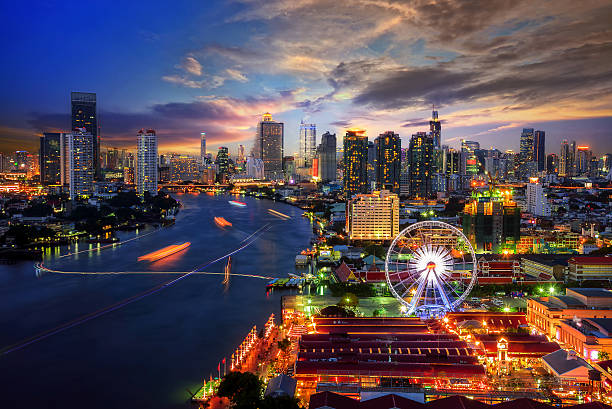

Bangkok was the most visited city on the planet in 2018, attracting up to 22.78 million travelers from around the world,
according to Mastercard's 2019 Global Destination Cities Index.
It's by far the largest city in Thailand with an estimated population of 10.539 million as of 2020, 15.3% of the country's population.
Because of the investment boom in the 1980s and 1990s, the city has become a big force in finance, business and an emerging centre for arts,
fashion and entertainment.
It is known for its exquisite temples and palaces, authentic canals, traditional markets and a vibrant nightlife.
Since the 1990s the city has relied on investment on public transportation, there are several lines of rapid transit, including the Metropolitan
Rapid Transit (MRT), Airport Rail Link (ARL) and its famous BTS Skytrain.
